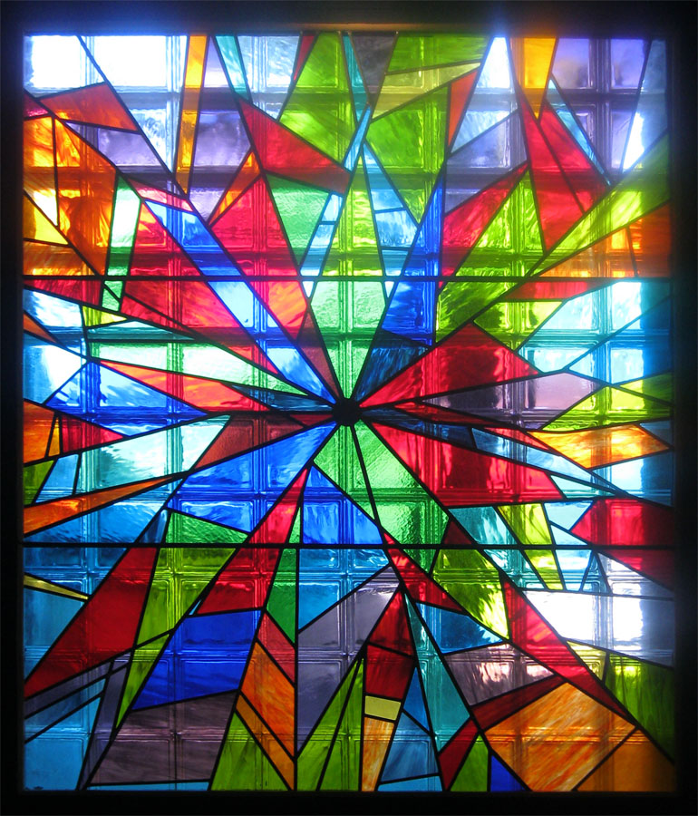
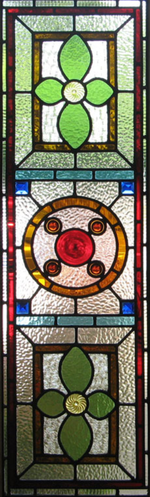

Leading Lights
of London Ltd
Stained Glass Design
Restoration & Repair
Leaded Light and Stained Glass Design, Restoration and Repair in London
Leading lights of London Ltd is a Stained Glass and Leaded Light company, based in Camberwell, South London and Camden, North London. The company specialises in Stained Glass Restoration, Stained Glass Repairs, Stained Glass Reproductions and new Stained Glass Designs. A range of forms and styles can be produced.
From beautiful Victorian Stained Glass front doors, feature Leaded Light Windows for pubs and restaurants, an infinite variety of Ecclesiastic Stained Glass, as well as bespoke designs, minor repairs, work for managed properties and quotes for insurance claims.
Free consultations within 5 miles of SE5 and NW1. In most cases, all we require is for you to email a photo of the damaged stained glass.